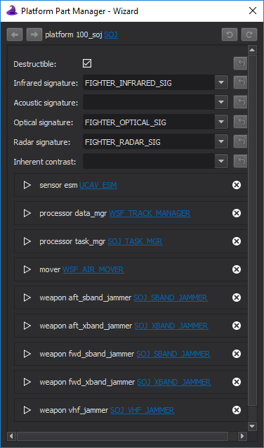
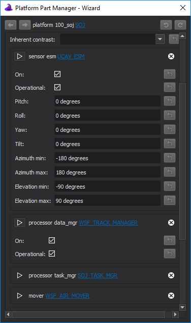

Platform Part Manager - Wizard¶
The Platform Part Manager provides a convenient way to view and change the values of various attributes belonging to platforms, platform types, and platform components.
{kind=link}
It is accessible from right-clicking a platform in the Platform Browser or a platform type in the Type Browser and selecting “Manage platform parts…” in the context menu.
The window features a header section at the top displaying the declaration of the platform or platform type being viewed, along with back/forward navigation buttons (on the left-hand side) and undo/redo buttons (on the right-hand side).
The body of the window contains editable attribute values and expandable sections for each platform part. Expanding a platform part section will reveal editable attributes specifically for that part.
Attributes¶
Attributes are listed in the window body in the style of a form, with labels on the left and editable values on the right.
Some attributes may feature multiple editable values and/or other special functionalities. When in doubt, try hovering your mouse over such elements to display their tooltips.
Each attribute will feature a “Reset to inherited value” button to its right that will reset the attribute to the value found in the parent of the platform or platform type. Attributes that have been overridden will have a white background.
Once editing is finished, the changes can be reverted altogether or applied to the scenario files.
Position¶
The Position attribute features multiple editable values and dedicated Copy/Paste buttons. The Copy button will copy a textual representation of the position data to the system clipboard. The Paste button will read the same format from the system clipboard and populate the attribute values on the form.
Parts¶
An expanded part. Also visible are the buttons for deleting and adding parts.
{kind=link}
Below the attributes are expandable sections for the platform parts defined on the platform or platform type. These sections also feature editable attributes.
A part can be deleted from a platform or platform type by clicking the X button associated with its section and following the prompt.
A new part can be added to a platform or platform type by scrolling to the very bottom of the window and selecting the “Add part” button. This will open a prompt that asks for which kind of part (sensor, weapon, etc.), the specific type, and name.